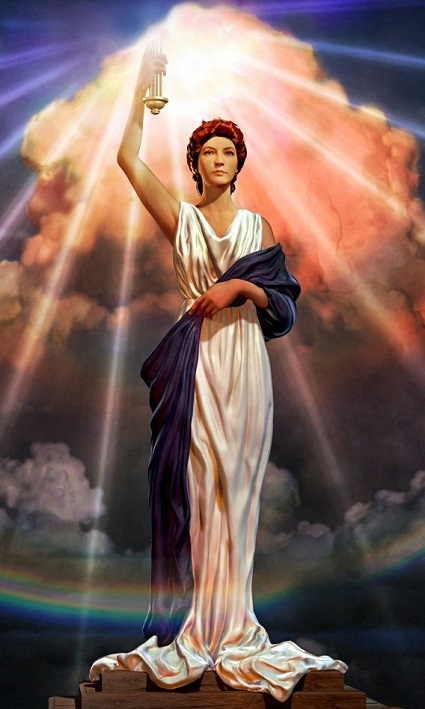
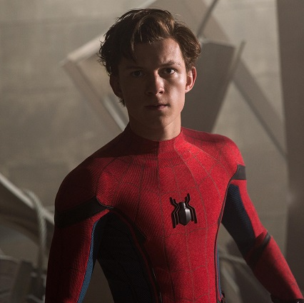
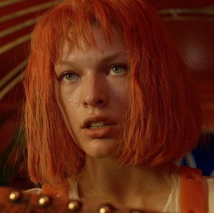
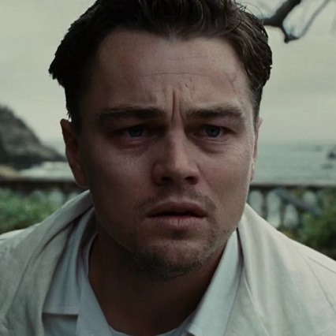
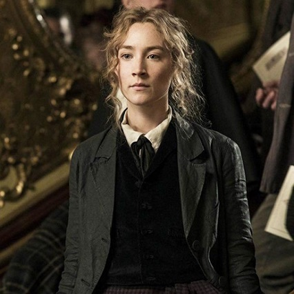
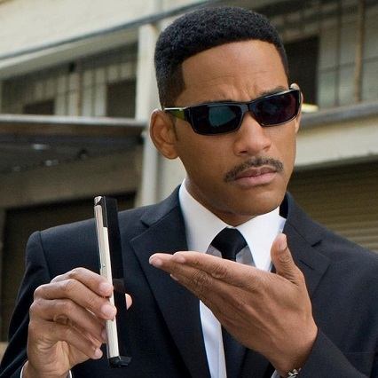

САМЫЕ ИЗВЕСТНЫЕ КИНОГЕРОИ COLUMBIA
Columbia Pictures Industries, Inc. является одной из ведущих киностудий мира, а также входит в большую пятерку американских киностудий. На сегодняшний день она является четвертой по величине киностудией в мире.
Компания CBC Film Sales Corporation была основана в 1919 году двумя предпринимателями Гэри Коном и его братом Джеком, а также примкнувшим к ним продюсером Джо Брендтом. Репутация фирмы была настолько низкой, что «CBC» в шутку расшифровывали как «квашеная капуста и солонина» (Corned Beef and Cabbage). В надежде хоть как-то поправить имидж Кон переименовал её в 1924 г. в Columbia Pictures. Именно с этого и началась история известной киностудии, подарившей нам множество интересных фильмов и запоминающихся персонажей.
И вот некоторые из них:
Человек-паук/Питер Паркер
Лилу
Тедди Дэниелс
Джо Марч
Агент J

ЧЕЛОВЕК-ПАУК/ПИТЕР ПАРКЕР
Питер Паркер был укушен радиоактивным пауком и в результате получил сверхчеловеческие силы, такие, как улучшенные физические способности, паучье чутьё и прилипание к различным поверхностям. Он взял псевдоним Человек-паук и встал на защиту мирных граждан. Переодеваясь в Человека-паука, юноша стал выходить на улицы и помогать простым людям. В основном, это были не очень примечательные дела, вроде поимки вора велосипедов и помощи бабушке найти дорогу. Но однажды Питер ввязался в драку с бандитами, к которым позже присоединился их главарь в костюме огромного существа с крыльями. У Человека-паука не хватило сил, чтобы дать ему отпор, и он чуть было не утонул. К счастью, вовремя появился Железный Человек. Он спас Питера и велел ему оставить затею по поимке этих преступников и заняться чем-нибудь попроще. Но Паркер не послушался и продолжил поиски Стервятника и его людей. На этот раз его попытка дать бандитам отпор чуть было не привела к крушению парома и гибели множества людей. Подоспевший Железный Человек всех спас, но в наказание изъял у Паркера костюм, сказав, что если Питер никто без костюма — значит, он его не достоин. Оставлять все как есть Паркер не захотел, а потому, заручившись поддержкой друга и облачившись в свою самодельную версию костюма, он направился на поиски врагов. Он понял, что Стервятнику хочет украсть самолет, на котором перевозились вещи Мстителей из одной штаб-квартиры в другую. Питеру удалось спровоцировать крушение, и самолет рухнул на пляж. Там и состоялась последняя битва Стервятника и Человека-паука. Несмотря на то, что злодей был значительно сильнее, его поврежденные крылья взорвались, и он лишился своей мощи. После победы над Стервятником жизнь Питера постепенно наладилась. Вскоре Тони объявил, что сделал для Паркера новый костюм, и готов рассказать журналистам о новом Мстителе. Питер ответил, что пока не готов к этому, и хочет просто помогать обычным людям.

ЛИЛУ
Лилу — вымышленный персонаж, главная героиня фантастического боевика Л. Бессона «Пятый элемент». Согласно мифологии фильма Лилу является древним существом-элементалем, в ДНК которой содержится необходимый элемент, способный в совокупности с четырьмя стихиями уничтожить живое воплощение средоточия зла. Каждые пять тысяч лет воплощение зла, в лице разумного планетоида, стремится уничтожить жизнь во Вселенной. Для того, чтобы предотвратить это, древние построили на Земле Храм Стихий, внутри которого находится алтарь, который используется в качестве оружия против воплощения зла. Алтарь состоит из четырёх постаментов, по одному на каждую из четырёх стихий; на каждый постамент кладётся соответствующий камень стихии. Постаменты на виде сверху образуют квадрат, в центре которого встаёт Пятый Элемент, то есть Лилу. Задействованный алтарь образует огромный сгусток энергии, который устремляется по направлению к воплощению зла, уничтожая его.

ТЕДДИ ДЭНИЕЛС
Осенью 1954 года маршал США Тедди Дэниелс и его напарник Чак Оул направились расследовать исчезновение детоубийцы Рэйчел Соландо, сбежавшей из Эшклиффской лечебницы для душевнобольных преступников на острове Шаттер. Лечебница строго охраняется, 42 её пациента находятся в обычных корпусах, а ещё 24 особо опасных — внутри бывшего военного форта, переоборудованного в корпус С. Вот только в ходе расследования Тедди заподазривает, что в корпусе С проводят опыты над пациентами. Пытаясь разгадать все загадки этой лечебницы, маршал находит настоящую Рэйчел Соландо. Она сама была одним из психиатров лечебницы, однако её попытка выдать миру правду об экспериментах по контролю за поведением людей обратила её из врача в узницу острова Шаттер. Она объясняет Тэдди, что в самой лечебнице пациентов пичкают нейролептиками, а на маяке проводят операции по изменению сознания, стирающие, опустошающие память и превращающие пациентов в обезличенных призраков, способных выполнять закодированные команды. Вот только нейролептики давали и Тэдди… Маршал решает пробраться в маяк. К своему удивлению, Тедди не находит на маяке никаких ужасных лабораторий — башня пуста. Лишь на последнем этаже он находит главного врача лечебницы, который объясняет Тедди ситуацию. Тедди был маршалом федеральных служб лишь до 1952 года; в действительности он — Эндрю Леддис, находящийся в клинике уже 2 года после убийства собственной жены. Все происходящие на острове события были инсценировкой, призванной вырвать Эндрю из его выдуманного мира в настоящий. Но правда это или очередная манипуляция над разумом Тедди, каждый зритель решает уже сам.

ДЖО МАРЧ
Джозефина Марч — героиня романа Луизы Мэй Олкотт «Маленькие женщины» и одноименных экранизаций, одна из которых была выпущена киностудией Columbia Pictures. В романе описывается жизнь четырёх сестёр семейства Марч — Маргарет, Джо, Бет и Эмми. Джо — вторая по старшинству из сестер Марч, ей 15 лет. Это настоящий сорванец в юбке. В отличие от старшей сестры, она не любит балы и девичьи разговоры, они кажутся ей скучными. Джо гораздо интереснее в мужской компании. Она лазает по деревьям, бегает наперегонки с друзьями, катается на коньках, а может даже и подраться. Она очень любит читать и мечтает стать писательницей, у Джо есть тетрадь с рассказами собственного сочинения. Джо честная и порой излишне прямолинейная — она совсем не умеет лукавить и лишена кокетства. Из-за этого многим она кажется грубой, однако других её открытость даже привлекает. В Джо влюбился Лори, но она, понимая, что не сумеет быть ему хорошей женой, отвергает его. Впоследствии она выходит замуж за герра Фридриха Баэра, профессора и немца-эмигранта, и рожает двоих сыновей — Роба и Тедди.

АГЕНТ J
Агент J — вымышленный персонаж из серии фильмов, комиксов и компьютерных игр «Люди в чёрном». На Земле тайно проживают полторы тысячи инопланетян. Для решения вопросов их социальной защиты и предохранения землян от возможного негативного влияния создано бюро по сотрудничеству с инопланетянами. У землян-агентов есть продвинутые технологии для взаимодействия с пришельцами и сокрытия их присутствия. Специальное устройство для стирания памяти помогает оставить в тайне факт наличия инопланетян для большинства населения Земли. Именно этим и занимается организация MIB, на работу в которую устроился Джеймс Даррел Эдвардс. Он становится напарником ветерана бюро Агента K и получает кодовое имя Агент J. Среди пришельцев Нью-Йорка нарастает паника и многие начинают покидать город. Приходит информация о незаконном пришельце захватчике из расы «жуков». «Жук» охотится за артефактом — «галактикой» под названием Аркилл, месторасположение которой — пояс Ориона. Военный крейсер аркиллийцев входит на орбиту Земли и высылает ультиматум в котором говориться об уничтожении планеты, если их «галактика» не будет возвращена. В распоряжении MIB считанные часы. Агенты Кей и Джей должны спасти Землю.